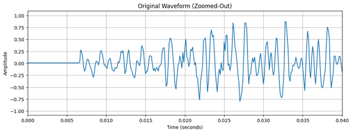
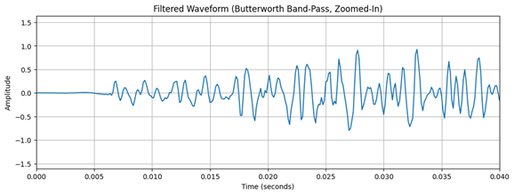
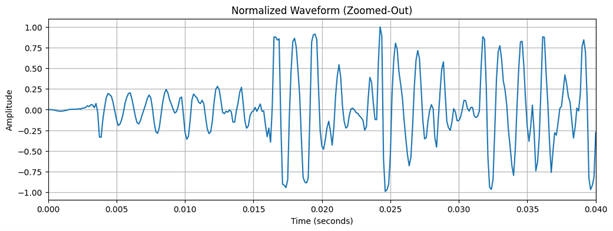
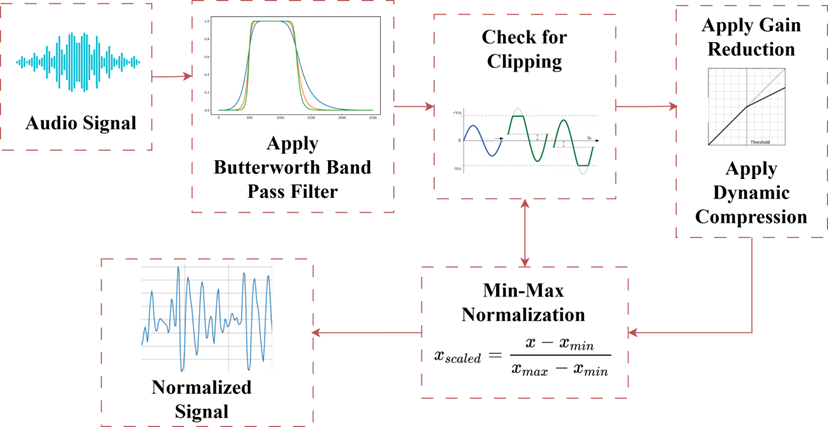

This initial visualization provides a time-domain representation of the audio signal, showing the amplitude of sound at each moment. Then, a “Butterworth band-pass filter” is applied to remove frequencies outside the relevant range. Since we are considering voice recordings, we often use a range between 300 Hz and 3400 Hz, which captures most of the human voice frequencies while discarding background hum, low-frequency vibrations, and high-frequency noise. The Butterworth filter is chosen for its smooth frequency response, which minimizes signal distortion. Clipping is a form of distortion that happens when the audio signal exceeds the maximum allowable amplitude, resulting in “flattened” peaks. After filtering, we check for clipping by identifying samples that reach the upper or lower amplitude limits (For an example., ±1.0 for normalized floating-point audio). Detecting clipping is essential as it affects sound quality, and normalization cannot correct this distortion.If clipping is detected, gain reduction is applied to bring the signal within a safer amplitude range. By reducing the gain, the signal’s overall amplitude is scaled down to avoid further clipping. This is done by applying a reduction factor, such as -6 dB, to the signal. Reducing gain helps to prevent additional distortion while preparing the audio for the next stages of processing.Applying dynamic range compression after gain reduction helps manage peaks and prevent further clipping. Dynamic range compression controls the audio signal’s dynamic range, reducing the volume of the loudest parts while leaving the quieter parts relatively unchanged. This process is helpful for signals with frequent loud peaks, where an excessive volume difference between loud and quiet sections can be challenging to manage. Compression is applied with a threshold and a ratio, which softens the peaks to prevent clipping. Normalization is the process of scaling the audio signal so that its maximum amplitude reaches a defined target, typically 1.0 for floating-point data. This step increases the overall loudness of the signal without introducing clipping, ensuring that the audio uses the full available dynamic range.